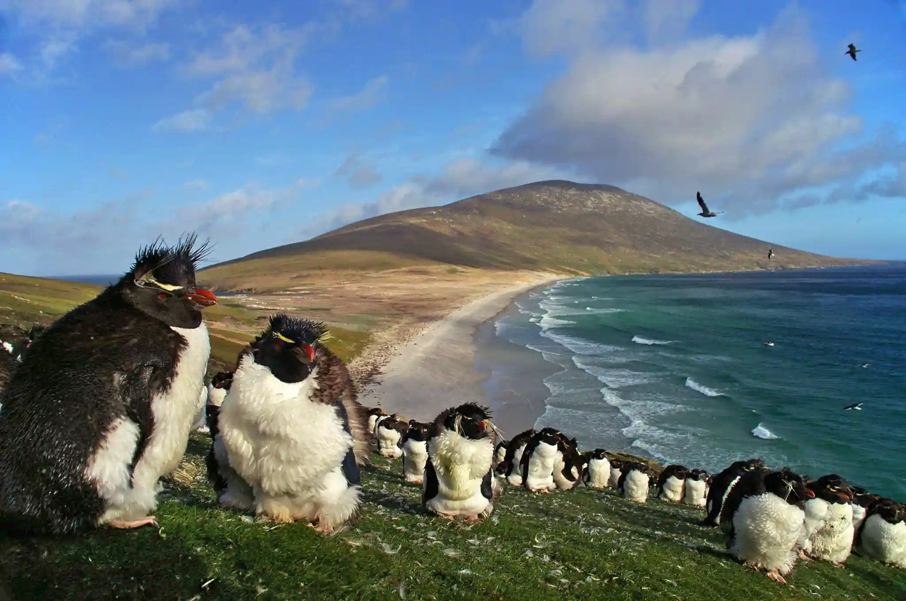

Dados
- Área:
- 12.173 km²
- População:
- 3.662
- Capital:
- Stanley
- Idioma:
- Inglês
- Moeda:
- Libra das Falkland
- Fuso horário:
- UTC-3
- Código telefônico:
- +500
- Domínio:
- .fk
Clima
- Temperatura:
- 8 °C
- Condições:
- Parcialmente nublado
- Vento:
- 19 km/h
- Sensação térmica: